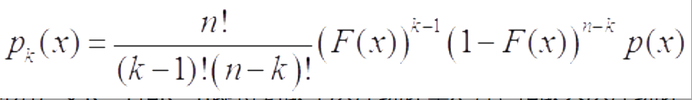
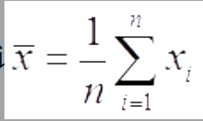

总体与样本
1总体与个体
在一个统计问题中，总体是研究对象的全体，个体是构成总体的每个成员．
总体可分为：一维总体，二维总体，三维总体；还可分为有限总体和无限总体．
2样本
为了解总体的分布，我们从总体中随机地抽取n个个体，记其指标值为x1，x2，…，xn，则x1，x2，…，xn称为总体的一个样本．n称为样本容量，或简称样本量，样本中的个体称为样品．
样本特点：随机性（即服从相同分布）和独立性（各样本相互独立）．
简单随机样本：用简单随机抽样方法得到的样本．
经验分布函数
定义
设x1，x2，…，xn是取自总体分布函数为F（x）的样本，若将样本观测值由小到大进行排列，为x（1），x（2），…，x（n），则x（1），x（2），…，x（n）称为有序样本，用有序样本定义如下函数：
则Fn（x）是一非减右连续函数，且满足Fn（－∞＝0）和Fn（∞＝1）．由此可见，Fn（x）是一个分布函数，并称Fn（x）为经验分布函数．
格里纹科定理
设x1，x2，…，xn是取自总体分布函数为F（x）的样本，Fn（x）是其经验分布函数，当n→∞时，有
统计量与抽样分布
1)统计量与抽样分布
设x1，x2，…，xn为取自某总体的样本，若样本函数T＝T（x1，x2，…，xn）中不含任何未知参数，则称T为统计量．统计量的分布称为抽样分布．
2)样本均值及其抽样分布
取自某总体的样本，其算术平均值称为样本均值，一般用x̅表示，即
在分组样本场合，样本均值的近似公式为
其中k为组数，xi为第i组的组中值，fi为第i组的频数．
样本矩及其函数
(1)设x1，x2，…，xn是样本，k为正整数，则统计量
称为样本k阶原点矩，样本一阶原点矩就是样本均值．统计量
称为样本k阶中心矩，样本二阶中心矩就是样本方差．
(2)设x1，x2，…，xn是样本，则称统计量
为样本偏度．
(3)设x1，x2，…，xn是样本，则称统计量
为样本峰度．
注意：①当β(∧)k明显大于0时，分布密度曲线在其峰值附近比正态分布来得陡，尾部更细，称为尖峰型；
②当β(∧)k明显小于0时．分布密度曲线在其峰值附近比正态分布来得平坦，尾部更粗，称为平顶型．
次序统计量及其分布
设x1，x2，…，xn是取自总体X的样本，x（i）称为该样本的第i个次序统计量，它的取值是将样本观测点由小到大排列后得到的第i个观测值．其中x（1）＝min{x1，…，xn}称为该样本的最小次序统计量，x（n）＝max{x1，…，xn}称为该样本的最大次序统计量．（x（1），…，x（n））称为该样本的次序统计量．
注意：在一个简单随机样本中，次序统计量既不独立，分布也不相同．
单个次序统计量的分布
设总体X密度函数为p（x），分布函数为F（x），x1，x2，…，xn为样本，则第k个次序统计量x（k）的密度函数为

特别，令k＝1和k＝n即得到最小次序统计量x（1）和最大次序统计量x（n）的密度函数分别为
p1（x）＝n（1－F（x））n－1p（x）
pn（x）＝n（F（x））n－1p（x）
多个次序统计量及其函数的分布
在上一个定理下，次序统计量（x（i），x（j））（i＜j）的联合分布密度函数为

样本分位数与样本中位数
定义
设x（1），…，x（n）是有序样本，则样本中位数定义为
更一般地，样本p分位数mp可如下定义：
 分布
分布
设总体密度函数为p（x），xp为其p分位数，p（x）在xp处连续且p（xp）＞0，则当n→∞时样本p分位数mp的渐近分布为
特别，对样本中位数，当n→∞时近似地有
三大抽样分布
1)χ2分布（卡方分布）
定义：设X1，X2，…，Xn独立同分布于标准正态分布N（0，1），则χ2＝X12＋…＋Xn2的分布称为自由度为n的χ2分布，记为χ2～χ2（n）．
Eχ2＝n，Var（χ2）＝2n
定理：设x1，…，xn是来自正态总体N（μ，σ2）的样本，其样本均值和样本方差分别为

和
则有：① x̅ 与s2相互独立；
② x̅ ～N（μ，σ2/n）；
③（n－1）s2/σ2～χ2（n－1）
2)F分布
定义：设随机变量X1～χ2（m），X2～χ2（n），X1与X2独立，则称
 的分布是自由度为m与n的F分布，记为F～（m，n），其中m称为分子自由度，n称为分母自由度．
的分布是自由度为m与n的F分布，记为F～（m，n），其中m称为分子自由度，n称为分母自由度．
小结论：对于较小α，可查表得到，对于较大的α，通过公式
转化得到．
3)t分布
定义：设随机变量X1与X2独立且X1～（0，1），X2～χ2（n），则称
的分布为自由度为n的t分布，记为t～t（n）．
特例：①自由度为1的t分布就是标准柯西分布，它的均值不存在．
②n＞1时，t分布的数学期望存在且为0．
③n＞2时，t分布的方差存在，且为n/（n－2）．
④当自由度较大（如n≥30）时，t分布可以用N（0，1）分布近似．